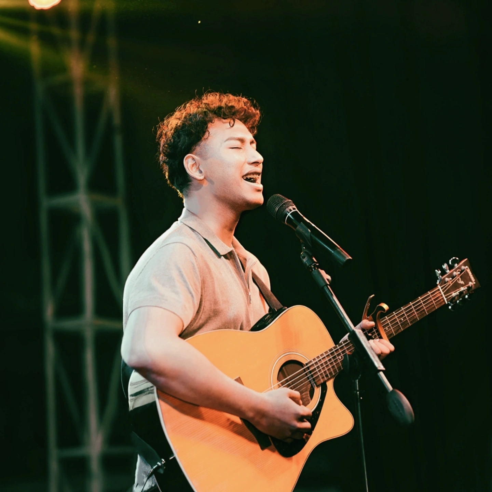

I'm Arnab, an AI/ML engineer, RAG-pipeline builder, and classically trained musician working out of Lalitpur, Nepal. Most days I'm making language models more honest about what they know.
Explore my story →
I grew up in Lalitpur with two instincts that never quite separated: wanting to know how things work, and wanting to make something out of what I knew. That combination has put me inside a raag lesson, a robotics workshop, and, more recently, the orchestration layer of an automated grading system.
Most of my working hours go toward retrieval-augmented systems and one uncomfortable question: is this answer actually grounded in something real? I care about that more than is strictly reasonable, which is why I keep building evaluation tools nobody asked for.
I also spent years training in Indian classical music before I trained a neural network. The discipline required for both turned out to be closer than I expected.
A résumé can tell you I've built RAG pipelines, fine-tuned models for legal question answering, and helped architect an examination platform for an AI fellowship. It can't tell you why a wrong citation in a retrieval system bothers me the same way a flat note does.
Job titles are a fair summary. They're rarely the full account.
Finished Cambridge A-Levels at Rato Bangala School and started an engineering degree at Thapathali Campus. The start of a long-running experiment in how much curiosity one schedule can hold.
Took on leadership of the Music Club and joined the Robotics and Automation Centre, organizing events for over a thousand people and competing in inter-college robotics competitions. Direction started to look less like a single path and more like a set of things worth doing well.
Selected for the Code for Nepal Data Fellowship and started building in earnest: computer vision for heritage sites, calorie recognition for Nepali foods, early experiments in retrieval and search. Every project changed the next one.
Won first place at the Dristi 3.0 hackathon, completed the Fusemachines AI Fellowship, and built Nyaya AI, an explainable legal search engine over Nepal's constitution. The kind of year where ideas finally had to hold up under evaluation.
Joined Fusemachines as an AI/ML Engineer Intern, architecting the orchestration layer of an end-to-end examination platform and co-designing AI curriculum with a U.S. university partner. Named a QS Impact Global Youth Ambassador. Still building things on the side.
Always asking better questions and staying open to unfamiliar ideas, whether that's a new architecture or a new raag.
Choosing quality and meaning over unnecessary complexity, in a pipeline or in a plan.
Treating every project, competition, and misstep as something to actually learn from.
Creating a life and body of work that genuinely feels like my own, not borrowed from somewhere else.
Paying attention to the details others may overlook: a citation, a chord, a line of spacing.
Making room for ambition without forgetting to enjoy the life being built alongside it.
Years of formal training under a diploma in Indian classical music. Once sang seven songs on national television, which turned out to be less nerve-wracking than presenting a capstone demo.
Led the Music Club and a fifteen-person robotics team through campus-wide events and inter-college competitions. Coordination, it turns out, is its own kind of engineering.
Volunteered as a teacher at Navakiran Children's Home, and served as School Captain years before that. Some habits start early.
Open-source evaluation and observability tooling for RAG pipelines: retrieval metrics, faithfulness scoring, run tracing. Mostly for the satisfaction of it.
That's true of a retrieval pipeline that needs one more evaluation pass. It's true of a raag that needs one more year of practice. I haven't found a shortcut for either. The work worth doing is usually slower than I want it to be, and better for it.
Whether it's an interesting idea, a research collaboration, a thoughtful conversation, or simply a chance to connect, I'd love to hear from you.
Get In Touch →